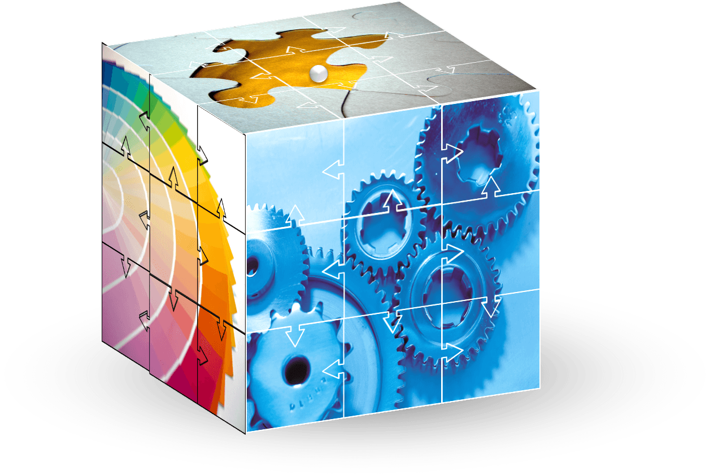

華特聖生物科技有限公司
關於我們
華特聖生物技術有限公司係由專精輻射安全防護相關專家技師與經驗豐富經理人共同創立， 致力於提供專業輻射防護各種訓練課程及輻射專業諮詢，創新提供最佳輻射安全防護訓練服務與貢獻。
Watson Advanced Biotechnology Company was founded by expert technicians and experienced managers specializing in radiation safety protection. It is committed to providing professional radiation protection training courses and radiation professional consultation, and providing the best radiation safety protection training services and contributions.
服務項目
產品介紹 (18 小時輻防訓練課程)
| 順練課程 | 規定時數 | 規劃時數 | 規劃課程 |
|---|---|---|---|
| 基礎輻射 | 四小時以上 | 四小時 |
|
| 游離輻射防護法規 | 五小時以上 | 五小時 |
|
| 輻射防護 | 三小時以上 | 三小時 |
|
| 輻射防護與應用 | 三小時以上 | 三小時 |
|
| 輻射防護實習或見習 | 三小時以上 | 三小時 |
|
產品介紹 (3 小時輻防訓練課程)

歡迎聯絡!
Contact us

歡迎報名!
華特聖生物科技有限公司
客服 Email : jason5678999@gmail.com
客服電話: 0975438158
Line: 0975438158